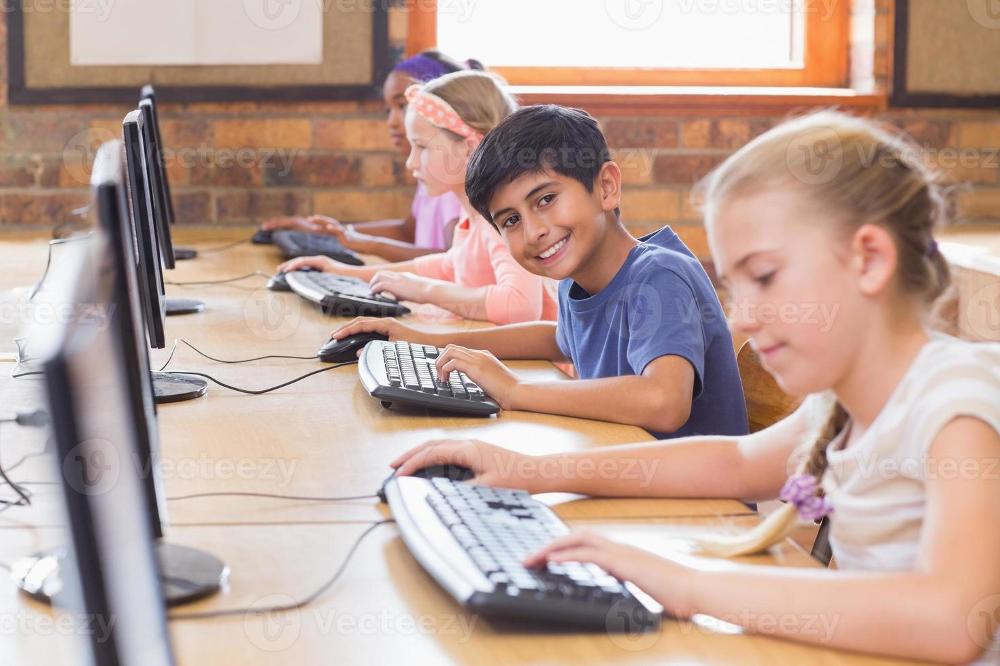
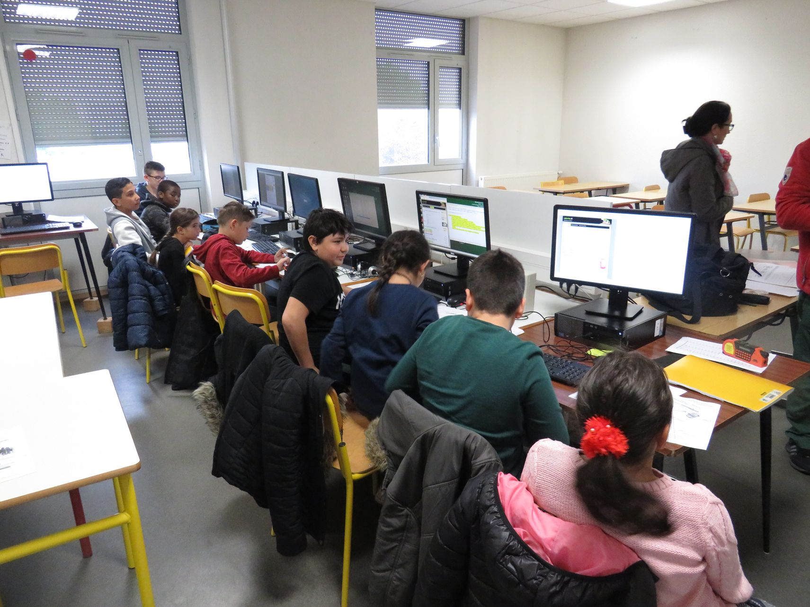

Depuis quelques années déjà, les technologies de l’information et de la communication (TIC) font de plus en plus partie de la salle de classe et de l’école. Cette présence est en outre amenée à croître de façon exponentielle, comme en témoigne par exemple le nombre de classes où chaque élève dispose d’un outil informatique, tel que les ordinateurs portables.

La présence marquée des technologies en contexte scolaire comporte à la fois des avantages et des défis qui devraient soulever de nouvelles questions à l’intention de l’ensemble des acteurs de l’éducation. En effet, trop souvent on se réjouit de la présence des technologies en salle de classe, sans se soucier des usages qui en découlent et au regard desquels on perd parfois la première des missions de l’école énoncées par le ministère de l’Éducation du Québec (2001, p. 4), « instruire, avec une volonté réaffirmée », dans un contexte où les technologies sont omniprésentes, dans un monde en changement constant. Alors que pendant plusieurs années on s’est demandé si les technologies influaient sur la réussite scolaire des élèves, il s’agit désormais de chercher quels usages des technologies doivent être mis en place afin de favoriser une plus grande réussite éducative de chacun : car l’enjeu majeur est bien là.